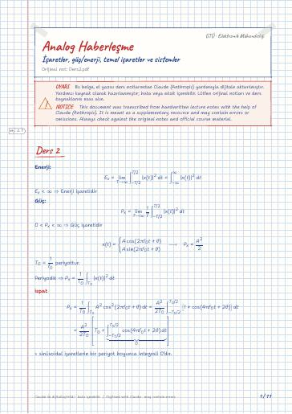
İşaretler, güç/enerji, temel işaretler ve sistemler
Ders 2 · Bazı önemli işaretler · Sinüsoidal işaretler · Kompleks üstel işaretler · Birim Basamak İşareti · Dikdörtgen Darbe işareti
Analog Communication Systems — lecture notes, past exams, homework, and projects at Gebze Technical University (GTU) Electronics Engineering
Fourier analizi, genlik modülasyonu (AM, DSB, SSB), açı modülasyonu (FM, PM), alıcı yapıları ve haberleşme sistemlerinde gürültü.
Fourier analysis, amplitude modulation (AM, DSB, SSB), angle modulation (FM, PM), receivers and noise in communication systems.
Bu sayfada: Ders Notları Uygulama Notları Dijital Notlar (LaTeX) Çıkmış Sorular Final/Vize Çalışması Ödevler Projeler
El yazısı notların LaTeX ile yazılmış, aranabilir dijital versiyonları. Şablon ve derleme: latex-sablon.

Ders 2 · Bazı önemli işaretler · Sinüsoidal işaretler · Kompleks üstel işaretler · Birim Basamak İşareti · Dikdörtgen Darbe işareti
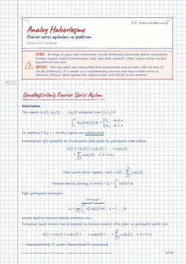
Genelleştirilmiş Fourier Serisi Açılımı · Trigonometrik FS açılımı · Compact FS Expansion · Fourier spektrumu · Üstel FS Expansion · Üstel F. spektrumu
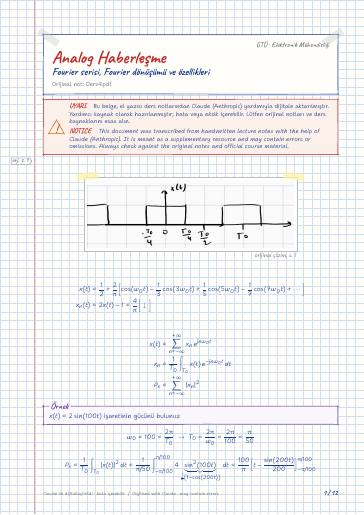
Fourier Dönüşümü · Band Genişliği (BG) (Bandwidth-BW) · Lineerlik özelliği · Dualite (Simetri) özelliği · Zamanda öteleme özelliği (Time shifting property) · Frekansta öteleme özelliği
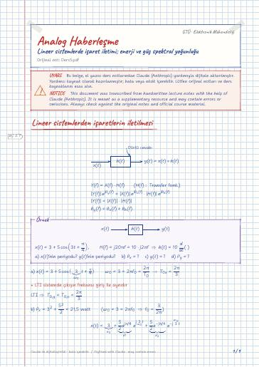
Lineer sistemlerden işaretlerin iletilmesi · Enerji ve Enerji yoğunluk fonksiyonu (EYF) · Energy Spectral Density (ESD) · Enerji işaretleri için özilişki fonk (autocorrelation) · Güç ve Güç yoğunluk fonk (GYF) · Power Spectral Density (PSD)
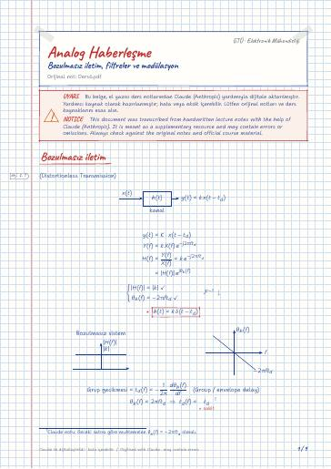
Bozulmasız iletim · İdeal ve pratik filtreler · Pratik filtre: Butterworth · Bir haberleşme kanalında işaret Bozulması · Modülasyon (Modulation) · Modülasyonun Sebepleri
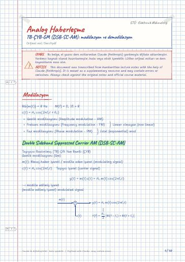
Modülasyon · Double Sideband Suppressed Carrier AM (DSB-SC-AM) · Demodülasyon · TB - ÇYB - GM'nin gücü · Synchronous / Phase coherent demod · Modülatörler
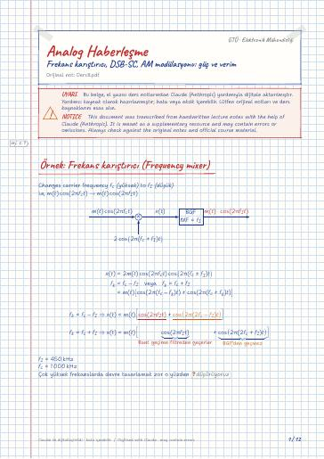
Örnek: Frekans karıştırıcı (Frequency mixer) · 4.2.4 kağıttaki soruları çözelim · DSB-SC-AM modulator · Problem 4-2-9 Lathi · DSB-Large carrier (LC)-AM / Büyük taşıyıcılı (BT) - ÇYB-GM · BT - ÇYB-GM'nin Gücü
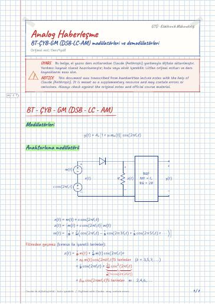
BT - ÇYB - GM (DSB - LC - AM) · Modülatörleri · Anahtarlama modülatörü · Lineer olmayan modülatör · BT - ÇYB - GM (DSB-LC-AM) · Demodülatörler
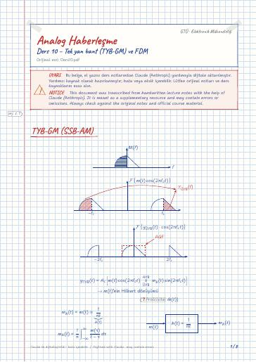
TYB-GM (SSB-AM) · TYB-GM modülatörleri · 1) Filtreleme tekniği (Filtering) · 2) Faz öteleme tekniği · TYB-GM – Demodülatörleri · 1) Faz tahminli demodülasyon (Coherent demodulation)
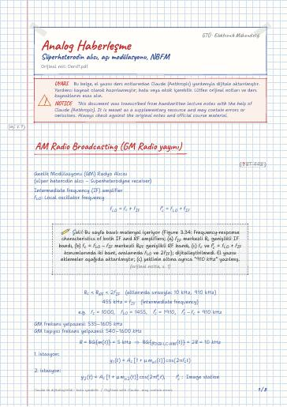
AM Radio Broadcasting (GM Radio yayını) · Açı (Angle) Modülasyonu · 1) Phase Mod. (PM) / Faz Modülasyonu (FZM) · 2) Frequency Mod. (FM) / Frekans Modülasyonu (FRM) · Genel üstel (Açı) Mod · Güç

Açı modülasyonu · Carson kuralı · Saf sinüsoidal işaretin açı modülasyonu · Bessel fonksiyonunu inceleyelim · Periyodik mesaj işaretinin açı modülasyonu

Açı modülasyonun lineersizliğe dayanıklığı · FRM (FM)'nin üretilmesi · 1) Dolaylı metod (Indirect method) · 2) Direk metod (Direct method) · FRM (FM)'nin Dönüşümü · Pratik FM demodülatörleri
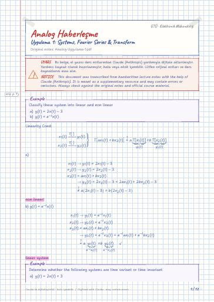
Fourier Seri Açılımları
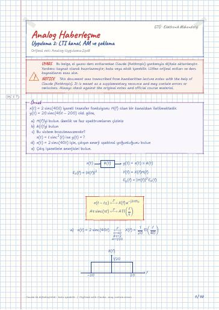
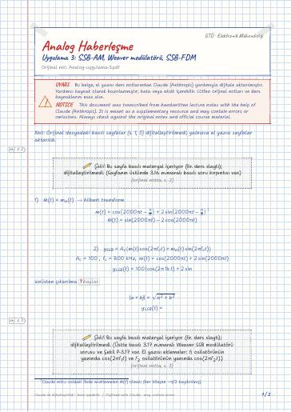
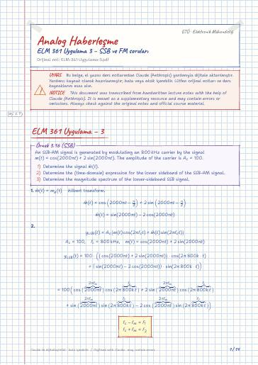
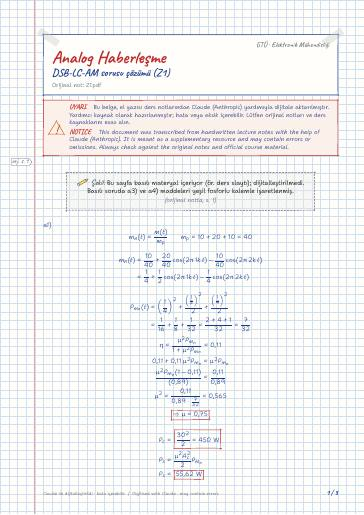
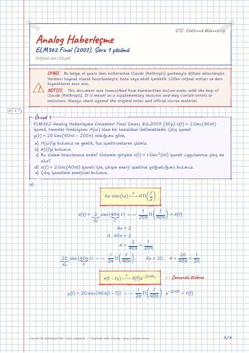
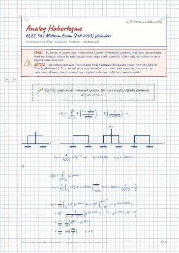
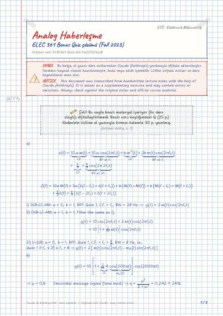
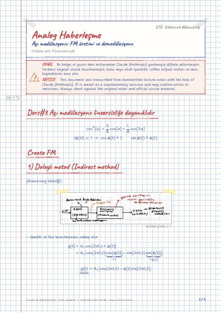
Ders#3 Açı modülasyonu lineersizliğe dayanıklıdır · Create FM · 1) Dolaylı metod (Indirect method) · 2) Direct Method · FRM (FM)'nin Demodülasyonu · Pratik FM demodülatörleri
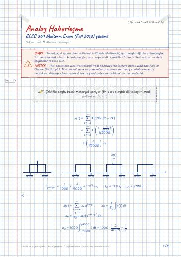
Elektromanyetik Alan Teorisi · Elektromekanik Enerji Dönüşümü · Elektronik II · Elektronik II Laboratuvarı · Mikroişlemciler · Mikroişlemciler Laboratuvarı
GitHub'da klasörü aç← 5. Dönem
Ders materyallerinin hakları ilgili öğretim üyelerine ve GTÜ'ye aittir; eğitim amacıyla paylaşılmıştır.